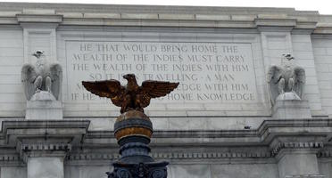
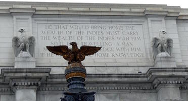
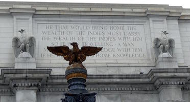
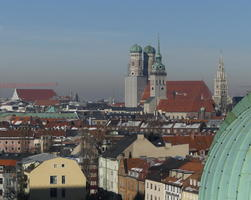
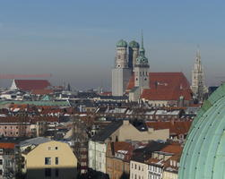

Eagles are everywhere in Washington, D.C.

 Deutsches Museum, Munich
Deutsches Museum, Munich
 The Deutsches Museum is one of the premier museums of science and technology in all of Europe.
Here you will find sections devoted to manufacturing, ships, energy production, and aviation.

There’s a planetarium on the top floor; an outdoor area gives you a fantastic view of the city.
You might not expect to see exhibits of musical instruments and technical toys, but this museum has them. For people who like hands-on exhibits, there’s an entire area where you can do simple physics experiments. The museum even has a working DNA lab!
The Deutsches Museum is one of the premier museums of science and technology in all of Europe.
Here you will find sections devoted to manufacturing, ships, energy production, and aviation.

There’s a planetarium on the top floor; an outdoor area gives you a fantastic view of the city.
You might not expect to see exhibits of musical instruments and technical toys, but this museum has them. For people who like hands-on exhibits, there’s an entire area where you can do simple physics experiments. The museum even has a working DNA lab!
The museum is open from 9 a.m. to 5 p.m. every day except some holidays. The S-Bahn Isartor and U-Bahn Fraunhoferstraße stations are near the museum.
Here is a closeup of the top of a clock at Mont des Arts (Kunstberg) in Brussels, Belgium.